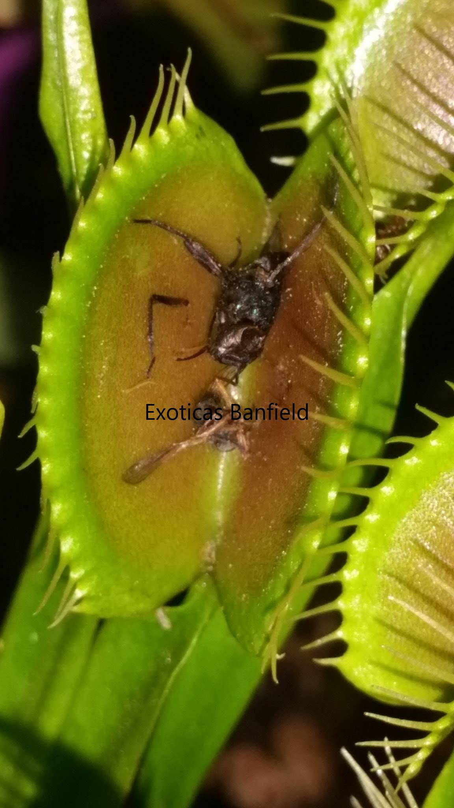
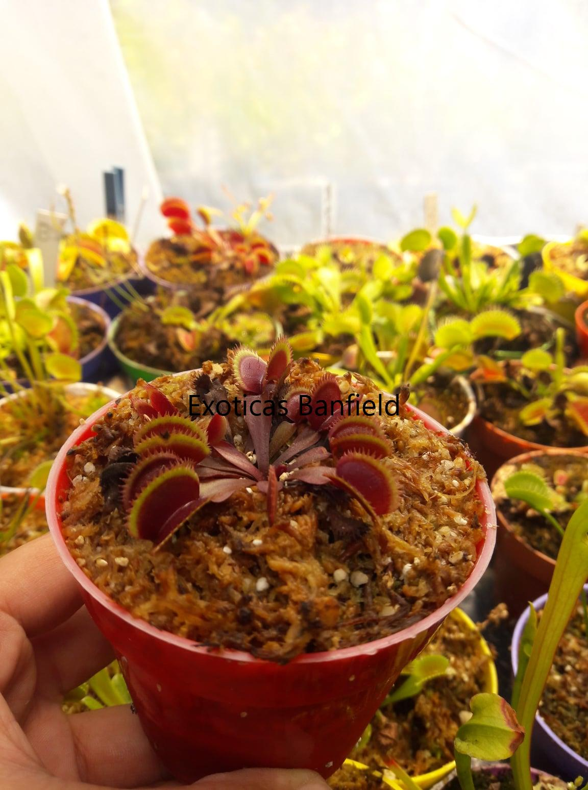
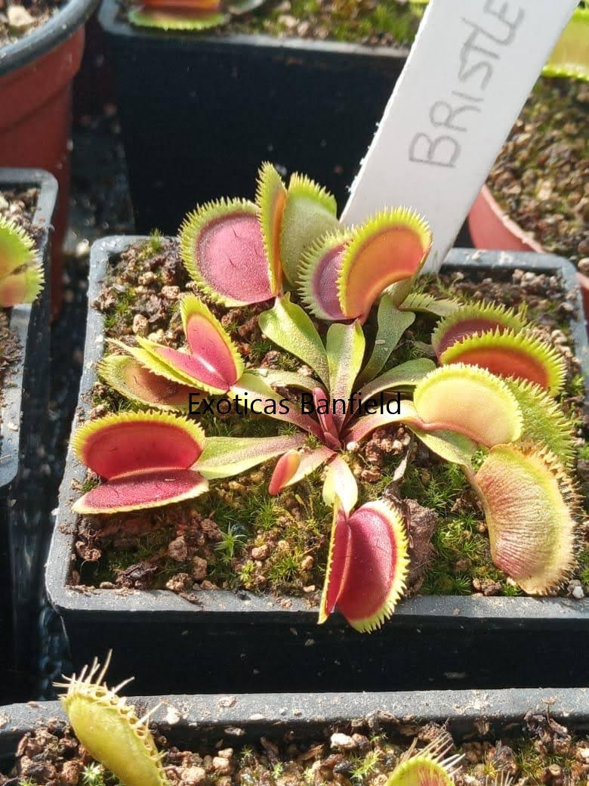

Dionaea
Habitat Natural
Crece Naturalmente en: Carolina del Norte y Carolina del Sur, en el sureste de los Estados Unidos.
Condiciones : Vive en pantanos abiertos, con sol directo, alta humedad y lluvias frecuentes. El clima es cálido y húmedo.
Entorno : Entornos pobres en nitrógeno, como pantanos y humedales, generalmente a cielo abierto.
Descripcion
Característica principal: La Dionaea muscipula tiene hojas modificadas que forman trampas en forma de "boca" o "mandíbulas". Estas trampas están equipadas con dientes (cilios) en los bordes, que ayudan a atrapar y mantener a los insectos en su interior.
Cultivares: Existe solo una especie, pero gran cantidad de cultivares. Estos cultivares presentan características únicas como diferente color, tamaño, forma de trampa, forma de dientes (cilios) o falta de ellos, etc.
Reproducción: Estos maravillosos cultivares solo se reproducen por división y por eso su reproducción puede ser más lenta. El más conocido es la B52, cuyas trampas son las más grandes.
Tamaño
Tamaño máximo: Aprox 25 cm de diámetro.
Método de Captura - Activo
Mecanismo: Su trampa se activa y cierra en menos de un segundo cuando un insecto pase por ella. Una vez absorbidos los nutrientes, vuelve a abrir o muere según la antigüedad de la hoja o tamaño del insecto.
Temperatura
Tolerancia: Tolera temperaturas de -0º a los 40º, siendo en época de crecimiento una temperatura ideal entre los 20 y 25º.
Riego en época calurosa: Tener en cuenta que en épocas calurosas se debe regar adecuadamente y evitar dejarla sin agua.
Precauciones: Superados los 40º es mejor tenerla fuera del sol directo.
Humedad
Nivel de humedad: Viven en ambientes húmedos, pero en su mayoría toleran una humedad ambiental entre el 40% y 80% pero, en general, tolera una humedad ambiental arriba del 50%
Riego
Agua: Solo con agua destilada o de lluvia. Llena la bandeja con 1 a 2 cm de agua para macetas chicas. En macetas más grandes, aumentar un poco más la cantidad.
Cambio de riego según la época:
Primavera/Verano: Se aconseja mantener el suelo siempre húmedo con agua en la bandeja. Puedes dejar la bandeja seca si el sustrato está húmedo, pero no dejar que se seque por completo. En esta época, las plantas están en constante crecimiento y necesitan bastante agua, siendo menos probable que se pudran.
Otoño/Invierno: Regar cuando se acabe el agua de la bandeja y dejar un tiempo secando si es necesario. Observa constantemente que el sustrato se seque un poco antes de regar, para evitar que las plantas se pudran o se llenen de hongos.
Floracion
Ciclo:Luego de los 3 a 4 años de edad, la planta florece a comienzos de primavera. Esto debilita mucho la planta, incluso puede llegar a morir si no tiene la fuerza necesaria. Si la flor afecta negativamente el crecimiento, se puede cortar la flor para evitar el estrés que produce.
Flores:Las flores son pequeñas, de color blanco, y se encuentran al final de un tallo largo que se eleva sobre la roseta de trampas. Suele medir un máximo de 25 cm de alto. Las flores no son muy vistosas y generalmente se desarrollan en primavera.
Trasplantes
Época recomendada: Se realiza en invierno o a comienzos de la primavera.
Motivo: La única razón para trasplantarla sería porque una maceta más grande proporcionaría un entorno más estable para las raíces, o porque el punto de crecimiento de la planta ha llegado al borde de la maceta o porque el sustrato esta contaminado.
Iluminación
Exterior:Requiere de 4 hs a 8 hs de luz solar directa.
Interior: Junto a una ventana que reciba mucha luz y, de ser necesario, se debe complementar con iluminación artificial.
Problemas de luz: Si falta luz, las hojas se alargan y se debilitan,las trampas salen deformes y chicas y se doblán fácilmente. Aumentar la iluminación progresivamente si esto sucede.
Sustrato
Requisitos: Estas plantas necesitan una tierra ácida y sin nutrientes. El sustrato más usado es una mezcla de TURBA RUBIA y PERLITA, o MUSGO DE SPHAGNUM y PERLITA, en proporciones 50/50, 60/40 o 70/30.
Resultados: Se obtienen mejores resultados con musgo de sphagnum y perlita.
Hibernación
Periodo: Hiberna a mediados de otoño hasta principios de primavera. Durante este periodo, la planta comienza a secar sus trampas y reducir su tamaño para guardar energías. Al llegar la primavera, la planta volverá a renacer poco a poco. Es importante controlar el riego para evitar hongos.
Alimentación:
Se alimenta de cualquier insecto que entre en sus trampas. Solo digiere insectos vivos. No requiere alimentación manual ya que tiene la capacidad de atraer a los insectos y obtiene los nutrientes a través de la fotosíntesis como otras plantas. Pero si desean hacerlo, nada se los impide. Una vez digerido el insecto, la trampa volverá a abrir o morirá según su tiempo de vida, lo que dará inicio a una trampa nueva.

Trampa de Venus con mosca digerida

Dionaea Bohemian Garnet

Dionaea Bristletooth